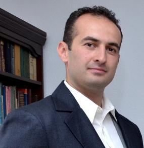

За мен
Име: Борислав Иванов
Настояща професия: лекар акушер-гинеколог
Мото: Ако не знаеш къде си тръгнал, ще стигнеш някъде другаде.
Настояща мисия: Моите възгледи и тези на моите колеги са:
- Да въвеждат нови и съвременни методи в пластичната, естетичната, ендоскопската и реконструктивната хирургия, профилактика и терапия при урологични и сексуални смущения, които гарантират професионално разрешаване на съществуващите проблеми при минимален риск;
- Да задават нови стандарти на обслужването, като използват само високотехнологични продукти, които са безопасни за здравето на пациента;
- Да развиват медицинската практика и наука, като предлагат собствена хирургична техника и програма в областта на естетичната, реконструктивната и баратричната хирургия.
История
Д-р Борислав Иванов, дм, е роден в Битоля - Македония, в семейството на известния гинеколог д-р Йован Иванов.
Завършва медицина в Медицинския университет в Пловдив през 2005 г., където придобива специалност по акушерство и гинекология през 2009 г.
Д-р Иванов защитава докторска дисертация на тема "Фетална медицина и доплер" също в Пловдив през 2011 г., където негови научни ръководители са професорите Благовест Пехливанов и Мария Малинова от АГ клиника в УМБАЛ "Св. Георги".
Като лекар, последователно се е обучавал в областта на АГ ехографията и феталната медицина. Следдипломните му квалификации са в Кингс Колидж в Лондон - по фетална медицина и в Швейцария - по лапароскопска хирургия. Изкарва курсове по УЗВ диагностика в Италия, Словения, Турция, и Хърватска.
Участва в екипа на отделението по гинекология в МБАЛ Медлайн от 2007 г. Провежда в болницата специализирана диагностика на жени с най-модерния 4D ехограф от последно поколение.
Проекти
В Болница МЕДЛАЙН смятаме, че създаването на култура на иновациите е най-добрият начин да се поддържа медицинска услуга от световна класа, услуга заемаща лидерска позиция.Иновациите привличат и задържат най-добрите служители, привличат средства и изграждат финансово стабилна организация, а най-важното е че, предоставят качествени грижи за нашите пациенти.
Болница Медлайн създаде програма извън рамките на традиционнитe благотворителни грижи за пациентите, които не могат да си позволят здравни услуги. Всяка година част от нашите приходи сe заделят за подпомагане на местни организации които разработват новаторски програми, насочени към широк кръг от рискове за здравето на обществото.
Контакти
| Телефон | 0885865214 |
|---|---|
| borislavivanov@gmail.com |